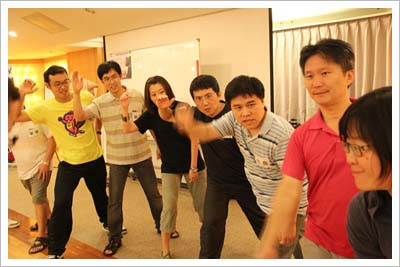
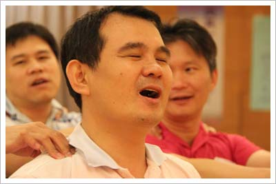

二天一夜的活力營，在課程活動遊戲中帶給我許多的感動及震撼。
“一，二，三”的報數遊戲，在大家腦力激盪下，成績有著十倍的進步，原來，腦力激盪的力量是如此的巨大。
“交通阻塞”，看到大部份的人都很直覺性的拿出紙筆做模擬和演算，熟不知最笨的方式才是最好的方法。過程中，也體驗到，當身邊的貴人出手相助及給你機會時，真的要心存感激和更加倍努力、謙虛 ，隨時將別人的幫助記在心裡。
“他不重，他是我兄弟”，看到了凡事看似簡單的事物，如果沒有團體的合作及同心，那它有可能會是人生中最難過的一關。
不得不承認，出社會愈久，人與人之間的信任感早已愈來愈薄，儒家的”人性本善”，似乎已是一種Old Fashion。社會中的競爭，早已讓人不再互相信任，“一路上有你”，黑暗中的摸索，讓你去學著信任別人，感謝別人的牽引，別多語，就這麼的單純的信任對方。
遇到事情，掌握一切狀況再下決定，才是成功的關鍵，在“神秘百慕達”中，看到了工作團隊的小縮影。大家對於共同的目標，都想盡一己之力，但其實這份熱誠卻是毀掉團隊成功的因素。沒有狀況的掌握，沒有Leader的團隊，就是一部多頭馬車只會更慌亂。
很多時候，其實大家都只是在瞎忙，以為團體的努力及合作，埋頭苦幹就會成功。其實各團體之間或是競爭者之間的合作，才會得到雙贏的結果。“扭轉乾坤”的大團體合作，在一個多小時大家揮汗如雨，一股儍勁的努力下，才從Roger老師的言語中得到啟示。人的成功，不會是只有個人努力或是小團體的努力就會達成。37人一起努力，成功達成任務的那一刻，抬頭看著頭頂的鏡子，相信團隊都為了這一刻的自已，感到驕傲與感動。也為了這份成功感到欣慰及興奮。
還記得課程開始時，Roger要大家”歸零學習”，來到課程裡，放下自己既有的成見及思維，讓自己完完全全的像張白紙的去重新學習。二天一夜的活動下來，一直到今天，心中的感動還在，一起努力過關，喊口號的那一份衝勁還在。現在，我記得時時提醒自己，“歸零學習” ，珍惜團隊的合作，學會聆聽別人的聲音，信任別人，謙虛的做事。課程結束後的疲累，肌肉酸痛，是學習的過程，猶如在成功的過程中，一定會有許多的絆腳石，有了這種過程，學習得到的收獲和啟發，是受益良多的，成功前的絆腳石，在成功後，才會知道果實的甜美。
